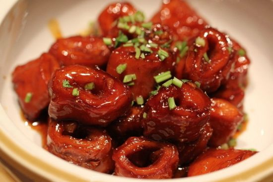
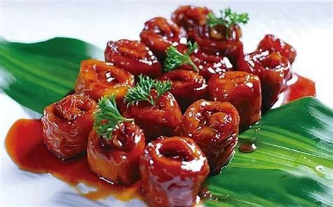
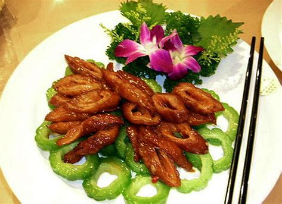

经典鲁菜盘点之九转大肠篇
发布时间: 2023-04-07 4859 次浏览
-
九转大肠是鲁菜的经典代表，此菜是清朝光绪初年，济南鲁菜代表九华林酒楼店主首创，开始名为“红烧大肠”，后经过多次多次改进，红烧大肠味道进一步提高。许多著名人士在该店设宴时均备“红烧大肠”一菜。一些文人雅士食后，感到此菜确实与众不同，别有滋味，为取悦店家喜“九”之癖，并称赞厨师制作此菜像道家“九炼金丹”一样精工细作，便将其更名为“九转大肠”。
九华楼是济南富商杜氏和邰氏所开。杜氏是一巨商，在济南设有9家店铺，酒店是其中之一。这位掌柜对“九”字有着特殊的爱好，什么都要取个九数，因此他所开的店铺字号都冠以“九”字。
“九华楼”设在济南县东巷北首，规模不大，但司厨都是名师高手，对烹制猪下货菜更是讲究，“红烧大肠”(九转大肠的前名)就很出名，做法也别具一格：下料狠，用料全，五味俱有，制作时先煮、再炸、后烧，出勺入锅反复数次，直到烧煨至熟。所用调料有名贵的中药砂仁、肉桂、豆蔻，还有山东的辛辣品：大葱、大姜、大蒜以及料酒、清汤、香油等。口味甜、酸、苦、辣、咸兼有，烧成后再撒上芫荽(香菜)末，增添了清香之味，盛入盘中红润透亮，肥而不腻。有一次杜氏宴客，酒席上了此菜，众人品尝这个佳肴都赞不绝口。
有一文士说，如此佳肴当取美名，杜表示欢迎。这个客人一方面为迎合店主喜“九”之癖，另外，也是赞美高厨的手艺，当即取名“九转大肠”，同座都问何典?他说道家善炼丹，有“九转仙丹”之名，吃此美肴，如服“九转”，可与仙丹媲美，举桌都为之叫绝。从此，“九转大肠”之名声誉日盛，流传至今。
黄河文化旅游宣传平台
联系电话: 17753010787
版权所有：山东大学技术团队
技术支持：山东大学技术团队